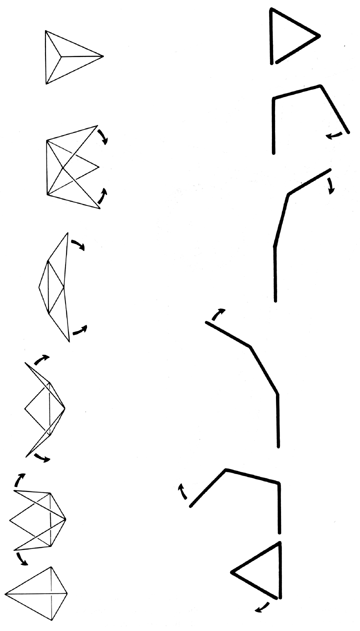
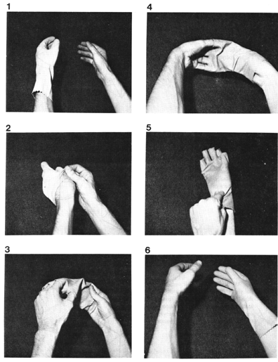

|  |
| Fig. 453.02 Inside-Outing of Triangle: This illustrates the insid-outing of a triangle, which transformation is usually misidentified as "left vs. right" or "positive and negative" or as "existence vs. annihilation" in physics. The inside-outing is four-dimensional and often complex. The insid-outing of the rubber glove explains "annihilation" and demonstrates complex into-extroverting. |
|  |